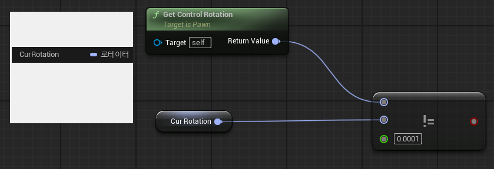
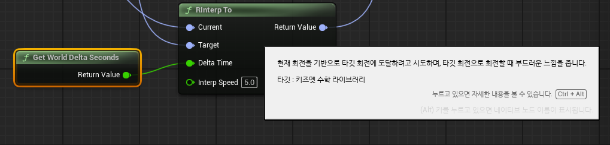
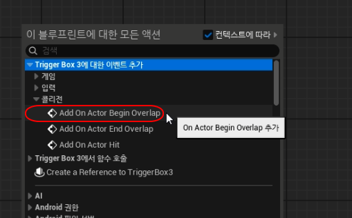
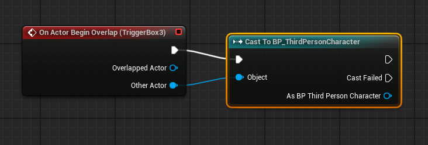
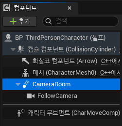
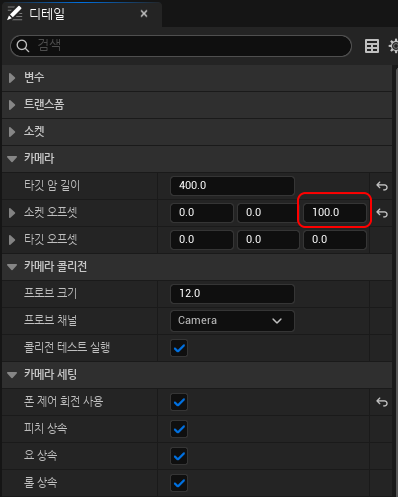

Not Equal 노드 사용시 허용오차- CurRotaiton은 로테이터 타입의 변수입니다.- Get Control Rotation과 CurRotation이 같으면 false, 같지 않으면 true를 반환 합니다. - 허용 오차를 0.0001로 설정합니다. 만약 오차 허용 범위를 0으로 둔다면?
 Get Player Controller란언리얼 엔진에서는 플레이어를 두 가지 요소로 나누어서 관리합니다.
대부분 상황에서 카메라는 컨트롤러를 따라가기 때문에 같은 것처럼 느껴집니다. Get Player Controller → Get Control Rotation 핵심: Set Control Rotation = 플레이어 시점(컨트롤러 방향)을 회전시키는 것 RInterp To회전값(Rotation)을 “부드럽게 목표 방향으로 보간(보정)”해주는 노드입니다.Lerp (Rotator)와 차이
 레벨 블루프린트에서 트리거 박스 사용맵에 추가된 "Trigger Box3"와 플레이어가 트리거 되었을때 어떻게 사용하는지 알아 보겠습니다.1. 레벨 블루프린트 열기 2. "Tigger Box3에 대한 이벤트 추가" 항목 찾기 3. "Add On Actor Begin Overlap" 항목 찾기  4. Cast To BP_ThirdPersonCharacter 추가  3인칭 시점의 프로젝트에서 카메라 z값 올리기BP_ThirdPersonCharacter > CameraBoom 선택 소켓 오프셋의 z값 조정해서 카메라 높이를 조정 할 수 있습니다.  |